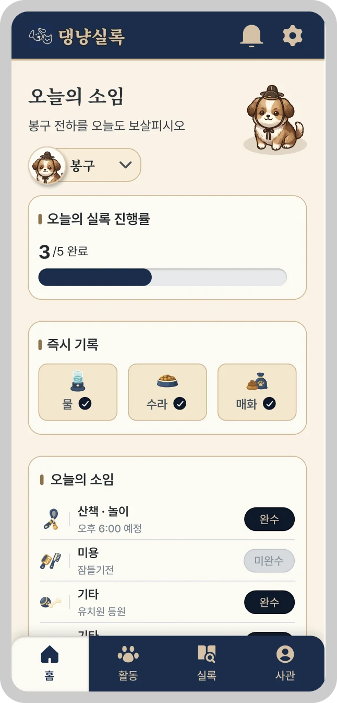
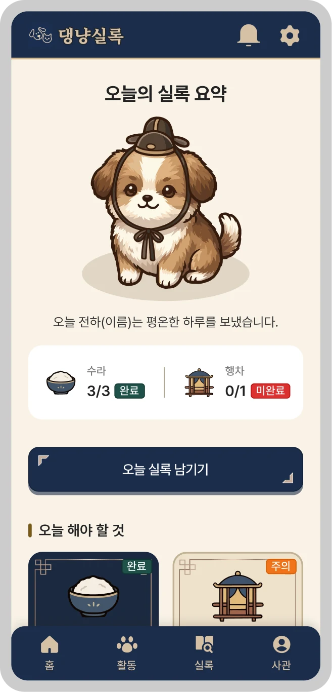
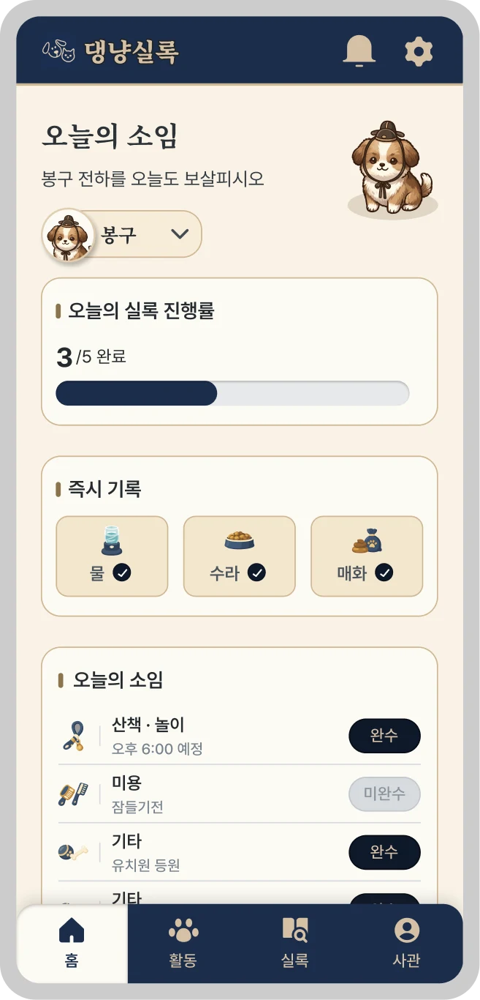
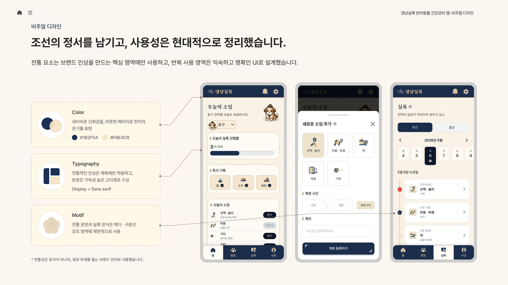

02 설계 과제
반려동물 기록을 시작하고 다시 확인하는 흐름의 부담을 줄이는 것을 설계 과제로 삼았습니다.
01
기록 진입
홈에서 빠른 기록으로 진입할 수 있도록 정리할 필요가 있었습니다.
02
입력 부담
일지와 반려동물 등록은 여러 화면에서 ‘다음’을 누르는 방식에서 한 화면을 스크롤하며 선택·입력하는 방식으로 바꿨습니다.
03
기록 확인
오늘의 일정과 쌓인 기록을 함께 확인할 구조를 구성했습니다.
PROJECT 03 · B2C · HABIT UX
댕냥실록은 반려동물의 건강 기록과 돌봄 일정을 관리하는 앱입니다. 개발자 1명과 함께 기획하고, 조선시대 콘셉트의 캐릭터와 문체를 활용한 UX/UI를 디자인해 iOS 앱으로 출시했습니다.
"공동 기획·UX/UI 디자인부터 iOS 앱 출시까지"

CASE AT A GLANCE
개발자 1명과 공동 기획하고 UX/UI를 디자인해 iOS 앱으로 출시했습니다. 반복 사용과 습관 형성 효과는 검증 결과로 제시하지 않습니다.
01 프로젝트 배경
개발자와 서비스 방향·기능을 함께 기획하고 UX/UI 디자인을 담당했습니다. 오늘의 돌봄 진행률·빠른 기록·일정을 홈에 배치하고, 조선시대 콘셉트의 캐릭터와 문체를 기능 안내에 맞게 조정했습니다.
02 설계 과제
홈에서 빠른 기록으로 진입할 수 있도록 정리할 필요가 있었습니다.
일지와 반려동물 등록은 여러 화면에서 ‘다음’을 누르는 방식에서 한 화면을 스크롤하며 선택·입력하는 방식으로 바꿨습니다.
오늘의 일정과 쌓인 기록을 함께 확인할 구조를 구성했습니다.
03 설계 결정
사용자가 해야 할 행동과 현재 상태를 한눈에 파악하도록 했습니다.
홈에서 자주 사용하는 기록의 입력으로 이어지도록 구성했습니다.
쌓인 기록을 확인할 수 있도록 업적과 리포트 화면을 구성했습니다.
04 설계 조정

설계에 반영한 내용초기 시안에서 캐릭터가 기록 버튼보다 먼저 눈에 들어와, 제가 홈 우선순위 변경을 제안했습니다. 수정한 홈으로 출시했습니다.

05 설계 화면과 흐름
설계 자료

06 출시 결과
개발자 1명과 협업해 iOS 앱으로 출시했습니다. 입력 단계 감소나 재방문 효과를 측정한 결과는 포함하지 않았습니다.
07 회고
조선시대 콘셉트의 캐릭터와 문체를 살리면서도 기능을 쉽게 이해할 수 있도록 표현을 조정했습니다. 브랜드 표현과 실제 사용에 필요한 정보 사이의 균형을 맞추는 경험을 했습니다.
반복 사용에서 실제로 기록이 이어지는지와 입력 중단 지점을 확인할 필요가 있습니다.